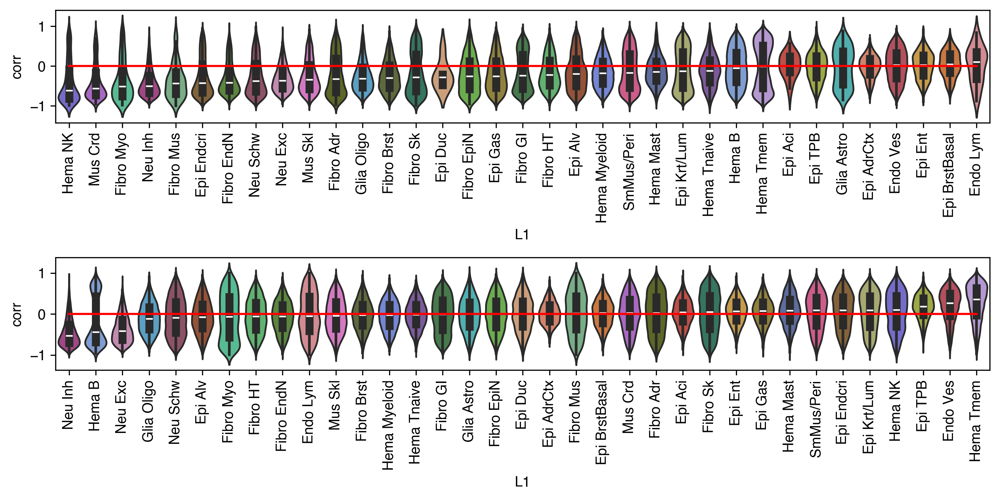
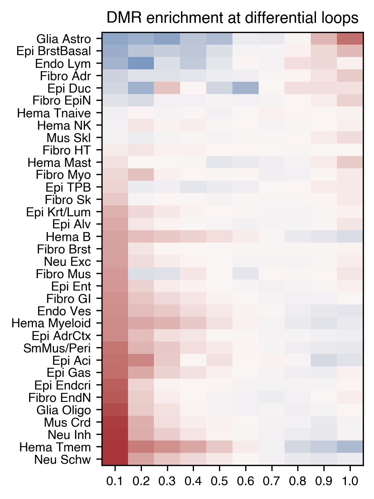
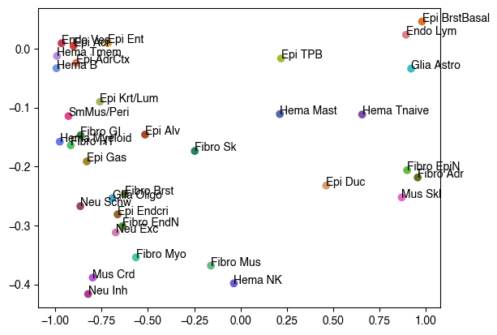
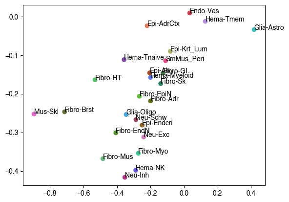
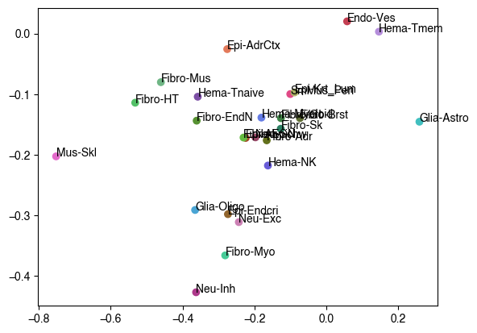
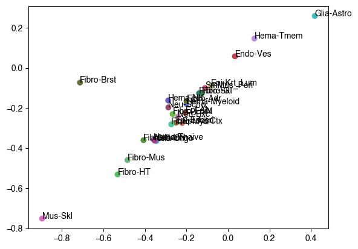
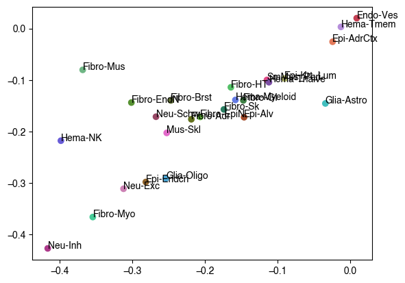
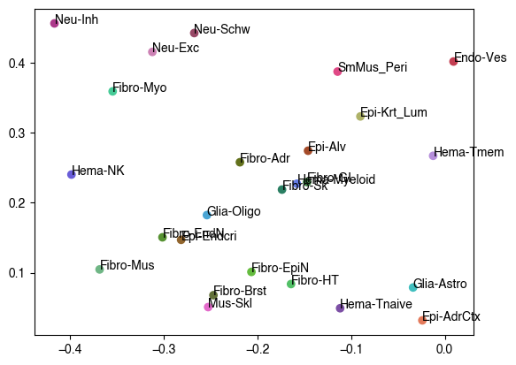

7. L2any L2both#
Part of the Fig. 5 chapter — see it for the panel-by-panel map. The first code cell sets ENTEX_ROOT and activates the no-overwrite guard (see the Reproduction guide). Outputs shown are the author’s original run.
📥 Required input files#
This notebook reads the following files (paths resolve from ENTEX_ROOT/REF_ROOT; the setup cell sets them). See the chapter’s inputs.md for RAW-vs-derived tags.
f'{indir}clustering/merged/group_meta.tsv'· metadataf'{indir}DMR/L2both-L2any/{l2b}_dmr'· DMRf'{tmpdir}loop_Q.hdf'· loop callsf'{tmpdir}merged_loop.hdf'· loop callsf'{indir}DMR/L2any_L2bothratio.txt'· DMRf'{indir}DMR/L2both_L2anyratio.txt'· DMRf'{indir}DMR/L1-L2both/c2_dmr'· DMRf'{indir}clustering/merged/L2/{l1name}/5kCG100k3C_embed.h5ad'· embedding h5adf'{indir}clustering/merged/L2_hiconly/{l1name}/mergemcg_rocpr.npy'· otherf'{indir}clustering/merged/L2_hiconly/{l1name}/mergehic_rocpr.npy'· otherf'{indir}L1color.tsv'· metadata: color
# === Reproduction setup — edit ENTEX_ROOT / REF_ROOT for your machine ===
import os, sys
ENTEX_ROOT = os.environ.get('ENTEX_ROOT', '/large_storage/zhoulab/zhoujt/project/ENTEx')
REF_ROOT = os.environ.get('REF_ROOT', '/large_storage/zhoulab/ref')
BOOK_ROOT = os.environ.get('BOOK_ROOT', f'{ENTEX_ROOT}/analysis/HumanCellEpigenomeAtlas')
sys.path.insert(0, BOOK_ROOT)
os.chdir(f'{ENTEX_ROOT}/analysis') # original working directory
import repro_guard # no-overwrite guard (default: skip existing)
import os
from glob import glob
import anndata
import matplotlib as mpl
import matplotlib.pyplot as plt
import numpy as np
import pandas as pd
import scanpy as sc
import scanpy.external as sce
import seaborn as sns
from ALLCools.clustering import *
from ALLCools.integration.seurat_class import SeuratIntegration
from ALLCools.plot import *
from sklearn.metrics import pairwise_distances, roc_auc_score
from sklearn.preprocessing import normalize
mpl.style.use("default")
mpl.rcParams["pdf.fonttype"] = 42
mpl.rcParams["ps.fonttype"] = 42
mpl.rcParams["font.family"] = "sans-serif"
mpl.rcParams["font.sans-serif"] = "Helvetica"
import warnings
warnings.filterwarnings("ignore")
indir = f'{ENTEX_ROOT}/'
# adata = anndata.read_h5ad(f'{indir}clustering/merged/5kCG100k3C_summary.h5ad')
meta = pd.read_csv(f'{indir}clustering/merged/group_meta.tsv', header=0, index_col=0, sep='\t')
meta
| L2_any | L2_mc | L2_3c | L2_both | L1 | L1_annot | count | |
|---|---|---|---|---|---|---|---|
| group | |||||||
| c5-c0-PT-1LVAN | c5-c0 | c5-c1 | c5-c0 | c5-c1 | c5 | Mus Skl | 772 |
| c1-c0-4809 | c1-c0 | c1-c0 | c1-c0 | c1-c0 | c1 | Hema Tmem | 771 |
| c5-c0-PT-1K2DA | c5-c0 | c5-c1 | c5-c0 | c5-c1 | c5 | Mus Skl | 627 |
| c4-c0-PT-1LGRB | c4-c0 | c4-c0 | c4-c0 | c4-c0 | c4 | Epi Gas | 593 |
| c4-c0-PT-1LVAN | c4-c0 | c4-c0 | c4-c0 | c4-c0 | c4 | Epi Gas | 533 |
| ... | ... | ... | ... | ... | ... | ... | ... |
| c8-c9-Other | c8-c9 | c8-c0 | c8-c4 | c8-c0 | c8 | Epi Ent | 1 |
| c8-c0-Other | c8-c0 | c8-c0 | c8-c0 | c8-c0 | c8 | Epi Ent | 1 |
| c15-c1-Other | c15-c1 | c15-c0 | c15-c0 | c15-c0 | c15 | Hema Tnaive | 1 |
| c12-c4-Other | c12-c4 | c12-c3 | c12-c4 | c12-c3 | c12 | SmMus/Peri | 1 |
| c3-c3-Other | c3-c3 | c3-c4 | c3-c4 | c3-c4 | c3 | Endo Ves | 1 |
940 rows × 7 columns
# tmp = meta[['L2_any', 'L2_both']].drop_duplicates()
# tmp['L2_both'] = tmp['L2_both'].str.replace('-c','-b')
dmr_group = {}
for l1,l1_df in meta.groupby('L1_annot'):
count = len(l1_df['L2_both'].unique())
if count>1:
dmr_group[l1] = {}
for l2b,l2b_df in l1_df.groupby('L2_both'):
tmp = list(l2b_df['L2_any'].unique())
if len(tmp)>1:
dmr_group[l1][l2b.replace('-c','-b')] = tmp
ngroup = np.sum([len(dmr_group[xx]) for xx in dmr_group])
print(ngroup)
61
import cooler
chrom_size_path = '/large_experiments/zhoulab/ref/hg38/fasta/hg38.main.chrom.sizes'
chrom_sizes = cooler.read_chromsizes(chrom_size_path, all_names=True)
chrom_sizes = chrom_sizes.iloc[:22]
import os
from ALLCools.mcds import RegionDS
from scipy.stats import norm, zscore
thres1 = norm.isf(0.025)
thres2 = norm.isf(0.15)
print(thres1, thres2)
1.9599639845400545 1.0364333894937898
L1annot = meta[['L1','L1_annot']].drop_duplicates().set_index('L1')['L1_annot']
# [pipeline/shell command — commented out; output is cached on disk]
# cat <(for i in `seq 0 34`; do echo c${i} $(bedtools intersect -wa -a L1-L2both/c${i}_dmr/dmr.bed -b L1-L2any/c${i}_dmr/dmr.bed | sort -k1,1 -k2,2n -u | wc -l) $(cat L1-L2both/c${i}_dmr/dmr.bed | wc -l); done) > L2both_L2anyratio.txt
# cat <(for i in `seq 0 34`; do echo c${i} $(bedtools intersect -wa -b L1-L2both/c${i}_dmr/dmr.bed -a L1-L2any/c${i}_dmr/dmr.bed | sort -k1,1 -k2,2n -u | wc -l) $(cat L1-L2any/c${i}_dmr/dmr.bed | wc -l); done) > L2any_L2bothratio.txt
tmp = pd.read_csv(f'{indir}DMR/L2any_L2bothratio.txt', index_col=0, header=None, sep=' ')
tmp.index = tmp.index.map(L1annot)
tmp['ratio'] = tmp[1]/tmp[2]
tmp
| 1 | 2 | ratio | |
|---|---|---|---|
| 0 | |||
| Hema Myeloid | 158785 | 211440 | 0.750970 |
| Hema Tmem | 114801 | 120391 | 0.953568 |
| Epi TPB | 173307 | 194222 | 0.892314 |
| Endo Ves | 587827 | 622036 | 0.945005 |
| Epi Gas | 0 | 42741 | 0.000000 |
| Mus Skl | 10320 | 175114 | 0.058933 |
| Fibro GI | 268714 | 346726 | 0.775004 |
| Hema B | 1142495 | 1524814 | 0.749268 |
| Epi Ent | 84008 | 112936 | 0.743855 |
| Epi AdrCtx | 6416 | 78627 | 0.081600 |
| Neu Exc | 282975 | 298870 | 0.946816 |
| Fibro HT | 11775 | 127748 | 0.092174 |
| SmMus/Peri | 157712 | 178968 | 0.881230 |
| Epi Endcri | 69664 | 97083 | 0.717572 |
| Glia Oligo | 98259 | 120263 | 0.817034 |
| Hema Tnaive | 3104 | 11145 | 0.278511 |
| Neu Inh | 164303 | 177587 | 0.925197 |
| Fibro Brst | 16803 | 58118 | 0.289119 |
| Epi Krt/Lum | 345280 | 383999 | 0.899169 |
| Fibro EndN | 52807 | 71021 | 0.743541 |
| Epi Alv | 59694 | 74965 | 0.796292 |
| Neu Schw | 92414 | 122041 | 0.757237 |
| Epi Aci | 0 | 3724 | 0.000000 |
| Fibro Sk | 65735 | 71109 | 0.924426 |
| Hema Mast | 0 | 7355 | 0.000000 |
| Epi BrstBasal | 0 | 11110 | 0.000000 |
| Mus Crd | 32670 | 37660 | 0.867499 |
| Hema NK | 12734 | 14620 | 0.870999 |
| Fibro EpiN | 11646 | 28632 | 0.406748 |
| Fibro Adr | 66132 | 85812 | 0.770661 |
| Epi Duc | 0 | 378 | 0.000000 |
| Glia Astro | 4134 | 9303 | 0.444373 |
| Fibro Mus | 2598 | 9260 | 0.280562 |
| Endo Lym | 0 | 2815 | 0.000000 |
| Fibro Myo | 9879 | 13143 | 0.751655 |
tmp = pd.read_csv(f'{indir}DMR/L2both_L2anyratio.txt', index_col=0, header=None, sep=' ')
tmp.index = tmp.index.map(L1annot)
tmp['ratio'] = tmp[1]/tmp[2]
tmp
| 1 | 2 | ratio | |
|---|---|---|---|
| 0 | |||
| Hema Myeloid | 154487 | 172376 | 0.896221 |
| Hema Tmem | 110466 | 1892303 | 0.058376 |
| Epi TPB | 168392 | 2156883 | 0.078072 |
| Endo Ves | 559197 | 1258225 | 0.444433 |
| Epi Gas | 0 | 0 | NaN |
| Mus Skl | 9698 | 9888 | 0.980785 |
| Fibro GI | 278186 | 305631 | 0.910202 |
| Hema B | 1167871 | 1185691 | 0.984971 |
| Epi Ent | 77965 | 85581 | 0.911008 |
| Epi AdrCtx | 6166 | 6518 | 0.945996 |
| Neu Exc | 282638 | 308642 | 0.915747 |
| Fibro HT | 11419 | 11788 | 0.968697 |
| SmMus/Peri | 155906 | 182130 | 0.856015 |
| Epi Endcri | 68516 | 78732 | 0.870243 |
| Glia Oligo | 89780 | 100223 | 0.895802 |
| Hema Tnaive | 3015 | 3196 | 0.943367 |
| Neu Inh | 162916 | 173662 | 0.938121 |
| Fibro Brst | 15979 | 18052 | 0.885165 |
| Epi Krt/Lum | 354395 | 423026 | 0.837762 |
| Fibro EndN | 51333 | 64255 | 0.798895 |
| Epi Alv | 58347 | 66133 | 0.882268 |
| Neu Schw | 92093 | 106782 | 0.862439 |
| Epi Aci | 0 | 0 | NaN |
| Fibro Sk | 65723 | 71109 | 0.924257 |
| Hema Mast | 0 | 0 | NaN |
| Epi BrstBasal | 0 | 0 | NaN |
| Mus Crd | 31936 | 53737 | 0.594302 |
| Hema NK | 12691 | 17365 | 0.730838 |
| Fibro EpiN | 11651 | 13721 | 0.849136 |
| Fibro Adr | 65426 | 79852 | 0.819341 |
| Epi Duc | 0 | 0 | NaN |
| Glia Astro | 4014 | 5171 | 0.776252 |
| Fibro Mus | 2591 | 2719 | 0.952924 |
| Endo Lym | 0 | 0 | NaN |
| Fibro Myo | 9880 | 13743 | 0.718911 |
dmr_ds = RegionDS.open(f'{indir}DMR/L1-L2both/c2_dmr', region_dim='dmr')
dmr_ds
<xarray.RegionDS> Size: 3GB
Dimensions: (count_type: 2, dmr: 5008469, sample: 36)
Coordinates:
* count_type (count_type) <U3 24B 'mc' 'cov'
* dmr (dmr) <U12 240MB 'chr1-0' 'chr1-1' ... 'chrY-41945'
dmr_chrom (dmr) <U5 100MB dask.array<chunksize=(4096,), meta=np.ndarray>
dmr_end (dmr) float64 40MB dask.array<chunksize=(4096,), meta=np.ndarray>
dmr_length (dmr) float64 40MB dask.array<chunksize=(4096,), meta=np.ndarray>
dmr_ndms (dmr) int64 40MB dask.array<chunksize=(4096,), meta=np.ndarray>
dmr_start (dmr) float64 40MB dask.array<chunksize=(4096,), meta=np.ndarray>
* sample (sample) <U6 864B 'c23-b4' 'c27-b2' ... 'c23-b1' 'c27-b5'
Data variables:
dmr_da (sample, dmr, count_type) uint32 1GB dask.array<chunksize=(7, 4096, 1), meta=np.ndarray>
dmr_da_frac (sample, dmr) float32 721MB dask.array<chunksize=(7, 4096), meta=np.ndarray>
dmr_state (sample, dmr) int8 180MB dask.array<chunksize=(7, 4096), meta=np.ndarray>
Attributes:
region_dim: dmr
region_ds_location: /large_storage/zhoulab/zhoujt/project/ENTEx/DMR/L1-L...
chrom_size_path: /large_storage/zhoulab/zhoujt/project/ENTEx/DMR/L1-L...result = []
for l1,l1name in meta[['L1','L1_annot']].drop_duplicates().values:
l1annot = l1name.replace('/','_').replace(' ','-')
corr_path_l2both = f'{indir}analysis/L2any_L2both/dmr_loop_corr/L2both/{l1}_{l1annot}_corr.npz'
corr_path_l2any = f'{indir}analysis/L2any_L2both/dmr_loop_corr/L2any/{l1}_{l1annot}_corr.npz'
if not os.path.exists(corr_path_l2both):
continue
corr_l2both = np.load(corr_path_l2both)
corr_l2any = np.load(corr_path_l2any)
result.append([l1, l1annot,
np.mean(corr_l2both['corr']), np.mean(corr_l2any['corr']),
np.mean(corr_l2both['corr_colnorm']), np.mean(corr_l2any['corr_colnorm'])])
result = pd.DataFrame(result, columns=['L1', 'L1annot',
'corr_L2both', 'corr_L2any',
'corr_colnorm_L2both', 'corr_colnorm_L2any']).set_index('L1')
corr_l2any_dmr = []
corr_l2any_bin = []
for l1,l1name in meta[['L1','L1_annot']].drop_duplicates().values:
l1annot = l1name.replace('/','_').replace(' ','-')
corr_path_l2any = f'{indir}analysis/L2any_L2both/dmr_loop_corr/L2any/{l1}_{l1annot}_corr.npz'
corr_l2any_tmp = np.load(corr_path_l2any)
corr_l2any_tmp = pd.DataFrame(corr_l2any_tmp['corr'][:, None], columns=['corr'])
corr_l2any_tmp['L1'] = l1
corr_l2any_tmp['L1annot'] = l1name
corr_l2any_dmr.append(corr_l2any_tmp)
corr_path_l2any = f'{indir}analysis/L2any_L2both/dmr_loop_corr/L2any/{l1}_{l1annot}_10kmcg_corr.npz'
corr_l2any_tmp = np.load(corr_path_l2any)
corr_l2any_tmp = pd.DataFrame(corr_l2any_tmp['corr'][:, None], columns=['corr'])
corr_l2any_tmp['L1'] = l1
corr_l2any_tmp['L1annot'] = l1name
corr_l2any_bin.append(corr_l2any_tmp)
corr_l2any_dmr = pd.concat(corr_l2any_dmr, axis=0)
corr_l2any_bin = pd.concat(corr_l2any_bin, axis=0)
from sklearn.metrics import adjusted_rand_score as ARI
labelmc, label3c, score = [], [], {}
for l1,l1name in meta[['L1','L1_annot']].drop_duplicates().values:
l1name = l1name.replace(' ','-').replace('/','_')
adata = anndata.read_h5ad(f'{indir}clustering/merged/L2/{l1name}/5kCG100k3C_embed.h5ad')
tmp1 = np.load(f'{indir}clustering/merged/L2_hiconly/{l1name}/mergemcg_rocpr.npy', allow_pickle=True)
labelmc.append(pd.Series(tmp1, index=adata.obs.index))
tmp2 = np.load(f'{indir}clustering/merged/L2_hiconly/{l1name}/mergehic_rocpr.npy', allow_pickle=True)
label3c.append(pd.Series(tmp2, index=adata.obs.index))
score[l1] = ARI(tmp1, tmp2)
labelmc = pd.concat(labelmc)
label3c = pd.concat(label3c)
score = pd.Series(score)
result['ARI'] = score.copy()
corr_l2any.groupby('L1')['corr'].median().sort_values().index
Index(['c34', 'c16', 'c13', 'c14', 'c10', 'c26', 'c30', 'c5', 'c27', 'c4',
'c20', 'c23', 'c29', 'c28', 'c21', 'c6', 'c31', 'c0', 'c19', 'c11',
'c12', 'c32', 'c17', 'c24', 'c18', 'c15', 'c8', 'c9', 'c2', 'c7', 'c22',
'c1', 'c25', 'c3', 'c33'],
dtype='object', name='L1')
colors = pd.read_csv(f'{indir}L1color.tsv', sep='\t', header=0, index_col=0)['color']
colors
L1
c33 #dd7f87
c3 #c43f52
c22 #d33d33
c9 #e37a5b
c20 #a44b29
c25 #e0742b
c30 #d99d6c
c13 #91652d
c8 #d9a138
c4 #9f892f
c18 #aeb268
c2 #a9b836
c29 #63711c
c17 #627037
c19 #579232
c28 #65bc3f
c6 #3f8146
c11 #53c067
c32 #6fb685
c34 #46cb97
c23 #2b7f63
c31 #41bfbf
c14 #4aa5d4
c7 #7199df
c24 #5366a9
c0 #657ce4
c27 #695dd8
c1 #b58edb
c15 #7c4fa5
c26 #af5ad1
c5 #e36aca
c10 #cc81b4
c16 #ad398b
c21 #984866
c12 #e04986
Name: color, dtype: object
fig, axes = plt.subplots(2, 1, figsize=(10,5), dpi=300)
ax = axes[0]
legorder = corr_l2any_dmr.groupby('L1')['corr'].median().sort_values().index
sns.violinplot(corr_l2any_dmr, x='L1', y='corr', palette=colors.to_dict(), ax=ax, order=legorder)
ax.set_xticklabels(L1annot.loc[legorder], rotation=90)
ax.plot([0,len(legorder)-1], [0, 0], 'r')
ax.set_xlim([-0.5, len(legorder)-0.5])
ax = axes[1]
legorder = corr_l2any_bin.groupby('L1')['corr'].median().sort_values().index
sns.violinplot(corr_l2any_bin, x='L1', y='corr', palette=colors.to_dict(), ax=ax, order=legorder)
ax.set_xticklabels(L1annot.loc[legorder], rotation=90)
ax.plot([0,len(legorder)-1], [0, 0], 'r')
ax.set_xlim([-0.5, len(legorder)-0.5])
plt.tight_layout()
fig.savefig('L2any_DMR_diffloop_corr_violin.pdf', transparent=True) # Fig 5I

real_d = {}
for f in glob('L2any_L2both/dmr_loop_enrich/L2any/c*_score_bylevel.npz'):
cluster = f.split('/')[-1].replace('_score_bylevel.npz','')
# name = L1annot[cluster]
overlap = np.load(f)
real_d[cluster] =list(overlap['score'])
from scipy.stats import pearsonr
score = pd.DataFrame.from_dict(real_d, orient='index').fillna(0)
# corr = np.array([pearsonr(np.arange(10), xx)[0] for xx in score.values])
corr = score.values[:,0]
# sel = score.mean(axis=1).sort_values().index[::-1]
score = score.iloc[np.argsort(corr)]
fig, ax = plt.subplots(figsize=(3,5), dpi=300)
ax.imshow(score, cmap='vlag', aspect='auto',vmin=0.65,vmax=1.35, interpolation='none',rasterized=True)
ax.set_title('DMR enrichment at differential loops', fontsize=10)
ax.set_xticks(np.arange(score.shape[1]))
ax.set_xticklabels([(i+1)/10 for i in range(10)],fontsize=8)
ax.set_yticks(np.arange(score.shape[0]))
ax.set_yticklabels(score.index.map(L1annot),fontsize=8)
[Text(0, 0, 'Glia Astro'),
Text(0, 1, 'Epi BrstBasal'),
Text(0, 2, 'Endo Lym'),
Text(0, 3, 'Fibro Adr'),
Text(0, 4, 'Epi Duc'),
Text(0, 5, 'Fibro EpiN'),
Text(0, 6, 'Hema Tnaive'),
Text(0, 7, 'Hema NK'),
Text(0, 8, 'Mus Skl'),
Text(0, 9, 'Fibro HT'),
Text(0, 10, 'Hema Mast'),
Text(0, 11, 'Fibro Myo'),
Text(0, 12, 'Epi TPB'),
Text(0, 13, 'Fibro Sk'),
Text(0, 14, 'Epi Krt/Lum'),
Text(0, 15, 'Epi Alv'),
Text(0, 16, 'Hema B'),
Text(0, 17, 'Fibro Brst'),
Text(0, 18, 'Neu Exc'),
Text(0, 19, 'Fibro Mus'),
Text(0, 20, 'Epi Ent'),
Text(0, 21, 'Fibro GI'),
Text(0, 22, 'Endo Ves'),
Text(0, 23, 'Hema Myeloid'),
Text(0, 24, 'Epi AdrCtx'),
Text(0, 25, 'SmMus/Peri'),
Text(0, 26, 'Epi Aci'),
Text(0, 27, 'Epi Gas'),
Text(0, 28, 'Epi Endcri'),
Text(0, 29, 'Fibro EndN'),
Text(0, 30, 'Glia Oligo'),
Text(0, 31, 'Mus Crd'),
Text(0, 32, 'Neu Inh'),
Text(0, 33, 'Hema Tmem'),
Text(0, 34, 'Neu Schw')]

enrich = pd.Series({xx: pearsonr(np.arange(10), yy)[0] for xx,yy in zip(score.index,score.values)})
enrich.sort_values()
c7 -0.993138
c1 -0.990156
c0 -0.975333
c3 -0.965429
c12 -0.928158
c11 -0.916190
c22 -0.901089
c9 -0.886686
c21 -0.864421
c6 -0.863111
c4 -0.829712
c16 -0.822199
c26 -0.797493
c18 -0.758658
c8 -0.715467
c14 -0.691600
c10 -0.673274
c13 -0.663296
c19 -0.636614
c17 -0.624529
c34 -0.564446
c20 -0.515060
c23 -0.246876
c32 -0.159989
c27 -0.035972
c24 0.212324
c2 0.218511
c30 0.462152
c15 0.656034
c5 0.869496
c33 0.893017
c28 0.898566
c31 0.920245
c29 0.955956
c25 0.979272
dtype: float64
corr = corr_l2any_dmr.groupby('L1')['corr'].mean()
corr.sort_values()
L1
c16 -0.416438
c27 -0.398281
c26 -0.388535
c32 -0.368260
c34 -0.354351
c10 -0.312019
c19 -0.301209
c13 -0.281310
c21 -0.267308
c14 -0.253791
c5 -0.252497
c17 -0.246854
c30 -0.232405
c29 -0.218606
c28 -0.206338
c4 -0.191406
c23 -0.173729
c11 -0.164100
c0 -0.157883
c6 -0.146950
c20 -0.145920
c12 -0.114431
c15 -0.111727
c24 -0.111027
c18 -0.090108
c31 -0.033925
c7 -0.033339
c9 -0.024012
c2 -0.016587
c1 -0.012514
c22 0.004826
c3 0.009233
c8 0.009464
c33 0.023580
c25 0.046112
Name: corr, dtype: float64
result = pd.concat([enrich, corr], axis=1)
result.columns = ['DMR diffloop enrich', 'DMR diffloop corr']
result['L1annot'] = result.index.map(L1annot)
xl, yl = 'DMR diffloop enrich', 'DMR diffloop corr'
fig, ax = plt.subplots()
ax.scatter(result[xl], result[yl], c=result.index.map(colors))
for xx,yy,l1 in result[[xl, yl, 'L1annot']].values:
ax.text(xx, yy, l1)

xl, yl = 'corr_L2both', 'corr_L2any'
fig, ax = plt.subplots()
ax.scatter(result[xl], result[yl], c=result.index.map(colors))
for xx,yy,l1 in result[[xl, yl, 'L1annot']].values:
ax.text(xx, yy, l1)

xl, yl = 'corr_colnorm_L2both', 'corr_colnorm_L2any'
fig, ax = plt.subplots()
ax.scatter(result[xl], result[yl], c=result.index.map(colors))
for xx,yy,l1 in result[[xl, yl, 'L1annot']].values:
ax.text(xx, yy, l1)

xl, yl = 'corr_L2both', 'corr_colnorm_L2both'
fig, ax = plt.subplots()
ax.scatter(result[xl], result[yl], c=result.index.map(colors))
for xx,yy,l1 in result[[xl, yl, 'L1annot']].values:
ax.text(xx, yy, l1)

xl, yl = 'corr_L2any', 'corr_colnorm_L2any',
fig, ax = plt.subplots()
ax.scatter(result[xl], result[yl], c=result.index.map(colors))
for xx,yy,l1 in result[[xl, yl, 'L1annot']].values:
ax.text(xx, yy, l1)

xl, yl = 'corr_L2any', 'ARI',
fig, ax = plt.subplots()
ax.scatter(result[xl], result[yl], c=result.index.map(colors))
for xx,yy,l1 in result[[xl, yl, 'L1annot']].values:
ax.text(xx, yy, l1)
